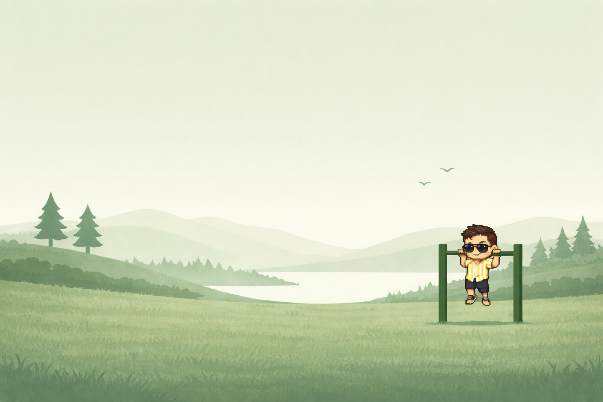
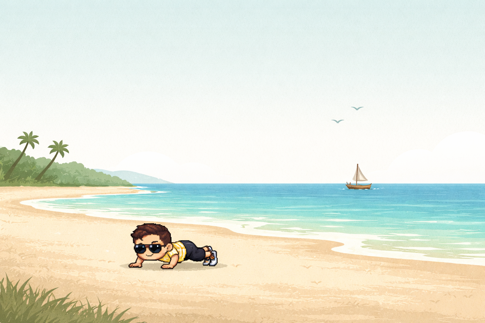

Glen Padua
Skipping leg day
since 2008.
I’m Glen. That’s me on the bar. The tiny version, anyway.
GLEN’S OWN BIO LINE · EXERCISE OUTFIT TO DESIGN · SCROLL INTO THE NEXT SETTING

Somewhere with a better view
Same guy.
Different background.
I like having a job. I also like having a life. Working remotely helps with both.
REFERENCE HAS PUSH-UPS · PROPOSED FINAL: CASUAL OUTFIT, BAG, A MOMENT BETWEEN ACTIVITIES
Back to the other tabs
Yes, I do
actually work.
Senior engineer at Remote.com. Over ten years of building software. This website is what happens when I give myself a brief.
CITY / EVENING OUTFIT TO DESIGN · A LIT WINDOW LEADS TO A SEPARATE WORK PAGE
01 / Colour carries you
No hard cut.
Sage mist becomes turquoise and sand, then warm dusk. These gradients study the colour handoff; final painted layers need matching horizons and feathered edges.
02 / Let people notice
A cue, not a pitch.
The play cue has one job. The football has another. Focus or hover names the action; persistent navigation provides a direct route.
03 / Keep the person
Different clothes. Same Glen.
Face, proportions, and anatomical left prosthesis carry across settings. Outfit and pose changes need consistent new artwork.
Work · a separate place
This is where I open
too many tabs.
Work, side projects, and ideas that got far enough to need a name.
Current experiment
This little world
The site you’re exploring: painted places, a recurring character, and lots of tiny decisions.
GLEN TYPING HERE · CHARACTER ART NOT YET MADE
The screen is the portfolio.
Browse projects on the main monitor. Open a readable detail view, then deliberately follow a product, internal tool, or case-study link. The laptop introduces Remote.com. No automatic carousel.
A bedroom with a person in it.
Final art adds Glen typing, his appropriate outfit, accurate prosthesis where visible, code and AI activity, and personal objects. The diagram above establishes the layout; it is not the final artwork or a screenshot of his actual desk.
Stories · proposed reading corner
Some of this made
sense in my head.
Stories, opinions, and the occasional change of mind. The leg has had enough screen time. There are other things to talk about.
Objects invite. The story gets the space.
Each piece can have its own form.
The room helps you find something to read. The article opens into a full reading experience: a personal journey, a scenario you can change, a failed idea you can pick apart, or a useful tool inside a practical explanation.
Personal stories
Illustrated moments, photographs, and asides. No need to turn a life story into a game or end it in a sales pitch.
Ideas & experiments
Make assumptions visible. Let someone try a comparison, follow a decision, or understand what went wrong.
Useful knowledge
Give the reader something they can use. A relevant project or custom-work conversation can follow naturally.
Reading corner is a proposal. A train compartment or travel notebook could work too. Keep a readable all-posts index; a bookshelf should never make finding an article harder.
What changed in 0.5
The previous draft was too much portfolio,
not enough Glen.
This version removes work examples from Home, gives Work its own room, and replaces the generic positioning lines with copy informed by three original essays. The reading room is a proposal, not a settled setting.
What the older writing actually does
- Misdirection: set up a grand entrance, then undercut it. The joke is often on Glen.
- Asides: an absurd question or a blunt observation interrupts the story in a way that sounds spoken.
- Earnestness: the jokes make room for reflection. They do not have to undercut every meaningful sentence.
- Specificity: real events and opinions, rather than a stream of claims about curiosity and craftsmanship.
“Skipping leg day since 2008” is Glen’s supplied line. The other scene copy is new draft material to edit together. Humour about the prosthesis should remain his to direct.
One object, one expectation
The exercise sprite opens the real-life video path. A separate speech cue opens the AI guide. A window leads to Work. A football can just be a football worth kicking. Keep those signals consistent across the world.
Still to choose
- The city, personal scene details, final activities, and outfit sheet.
- The real calisthenics clip and how it should play.
- The Work monitor’s actual project roster and each destination.
- The writing room setting, first interactive essay, and final voice.
- The human contact channel and where its cue lives.
No application routes, character assets, live AI, embeds, or published posts have changed. This board lets us explore the revised structure and simple interactions first.